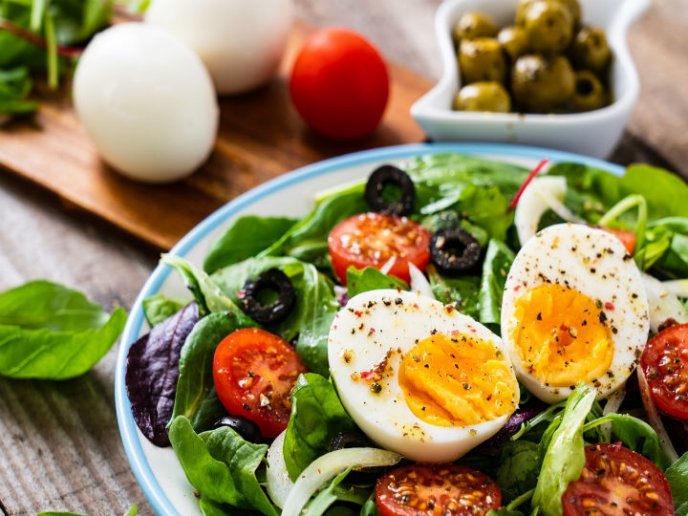

Alimentacion consciente
Ensalada fresca de verano

ingredientes
- Espinaca
- Tomate
- Palta
- Huevo
- aceitunas
preparacion
- Hervir y pelar los huevos
- Lavar y cortar espinaca
- Lavar y cortar los tomates
- Agregar la palta en cubos y las aceitunas
- Mezclar y salpimentar
Consejito
Como cortar una palta

Sabias que en Argentina se cultivan Paltas?